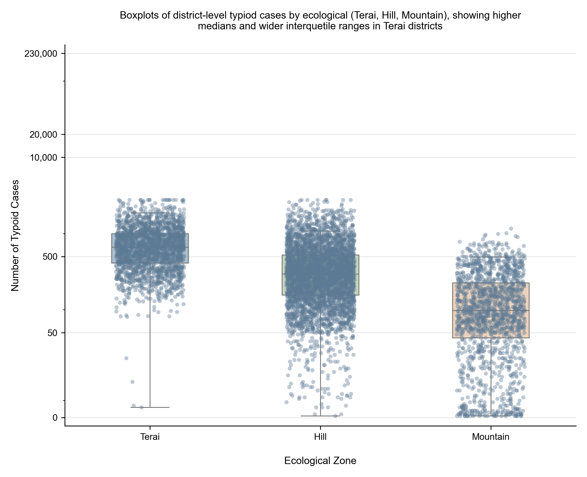
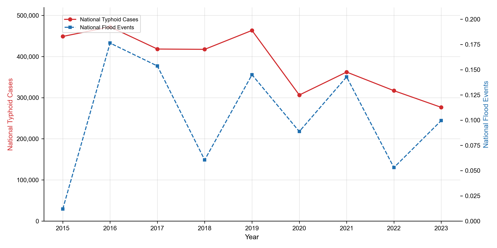
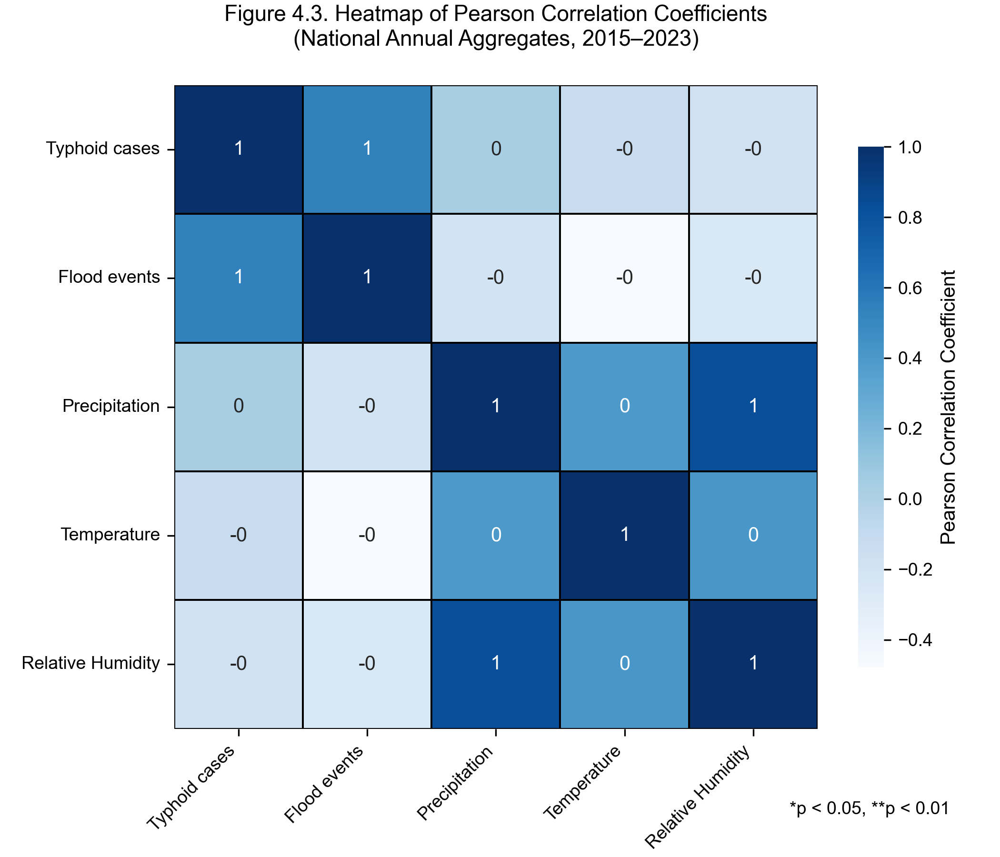
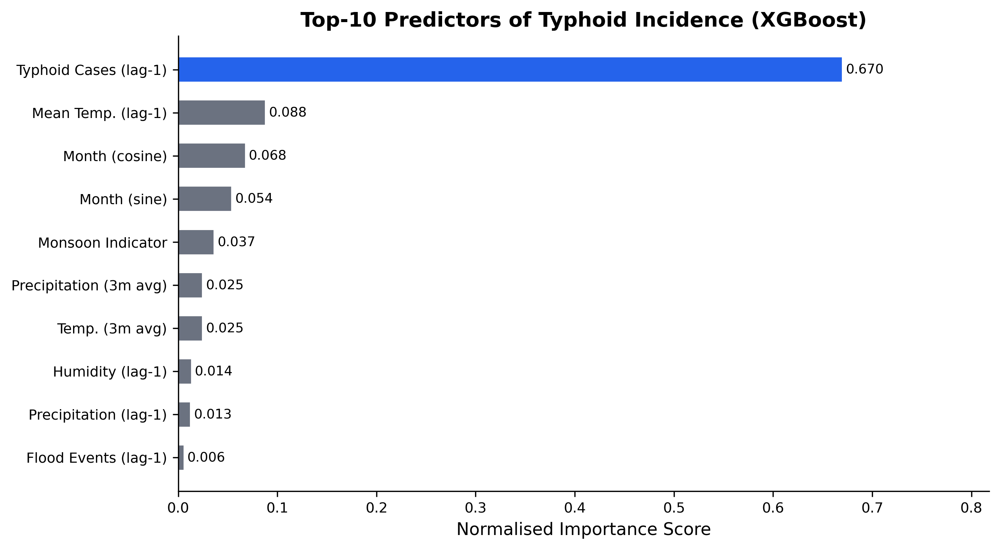
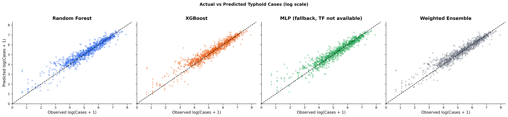

Under Extreme Climate Change Scenarios Using Machine Learning
Kathmandu University · Department of Health Informatics · Dhulikhel, Nepal
2026-05-17
Research Presentation
Predictive Modeling of Typhoid Incidence in Nepal
Under Extreme Climate Change Scenarios Using Machine Learning
Kritika Baral
Kathmandu University · Department of Health Informatics · Dhulikhel, Nepal ORCID 0009-0007-1517-1063
Part I
The problem of typhoid in a warming Nepal
A persistent endemic disease, a vulnerable geography, and a climate trajectory that compounds both.
9.2 M Annual global cases
100 K Annual Nepal cases
70–80% Occur in monsoon (Jun–Sep)
60–70% Cases in children < 15 yrs
Climate is amplifying risk. Nepal is warming at 0.056 °C / year — twice the global average — with monsoon precipitation up 20–30 % since 1990. Flooding disrupts WASH systems, contaminating drinking-water sources where Salmonella Typhi persists and spreads. The typhoid conjugate vaccine has reached 85 % coverage, yet residual burden persists.
Sources: (Bhandari et al., 2022; Coalition Against Typhoid, 2024; GBD 2023 Causes of Death Collaborators, 2025; Intergovernmental Panel on Climate Change, 2022; Karkey et al., 2018; Levy et al., 2023; Ministry of Forests and Environment, Government of Nepal, 2021; Ministry of Health and Population, Government of Nepal, 2023).
Three gaps in current typhoid prediction
i. No flood-lag integration. SEIR / ARIMA frameworks miss the 1–2 month flood-lag effect → underestimate monsoon-driven surges by 15–20 %.
ii. No subnational resolution. National aggregates obscure Terai hotspots (Rautahat: 1,711 cases / monsoon month); fewer than 20 % of models stratify by WASH access.
iii. No integrated multimodal forecasting. ML diagnostic models excel at clinical AUROC, but none combine HMIS surveillance + DRR flood records + ERA5 / CHIRPS climate grids.
This is the first study to integrate all three of Nepal’s national-scale data streams into a single ML predictive framework for typhoid.
To what extent do climate-induced flood events, together with precipitation anomalies and relative humidity, influence the spatiotemporal patterns of typhoid fever incidence across Nepal?
Four specific objectives
i. Describe. Spatiotemporal distribution of typhoid cases and flood events across ecological zones.
ii. Quantify. Associations between typhoid incidence and hydro-meteorological variables, including one-month-lagged effects.
iii. Develop and compare. Four ML models — Random Forest, XGBoost, an MLP / LSTM, and a Weighted Ensemble — selecting the ensemble as the headline performer and XGBoost as the operational pick.
iv. Project. 2050 burden under SSP2-4.5 and SSP5-8.5 climate pathways.
Part II
Data, design, and machine learning
Three independent national datasets, harmonised into one district–month panel. Three complementary algorithms, validated under strict temporal discipline.
Scope
• 77 districts. The complete national administrative grid of Nepal.
• 108 months. Jan 2015 – Dec 2023, monthly resolution.
• 3 ecological zones. Terai (< 300 m, flood-prone) · Hill · Himalayan mountain belt.
Why ecological design
The objective is population-level climate–health attribution. Individual-level RCT-style designs are neither feasible nor appropriate for environmental drivers of endemic disease.
Analytical framework
1. Descriptive epidemiology. Spatial and temporal patterns of typhoid and flood co-occurrence.
2. Generalized Linear Mixed Models. Fixed-effect climate–disease attribution + district random effects.
3. Machine learning. Non-linear thresholds, interaction terms, and one-month-lagged predictors.
A hybrid GLMM-and-ML approach — explanatory and predictive in a single framework.
| Source | Variable | Resolution | Provider |
|---|---|---|---|
| HMIS | Monthly outpatient typhoid cases | District-month | MoHP Nepal (Ministry of Health and Population, Government of Nepal, 2023) |
| CHIRPS | Precipitation | District-month avg | Funk et al. (2015) |
| ERA5-Land | Air temperature · relative humidity | District-month avg | Muñoz-Sabater et al. (2021) |
| DRR portal | Flood event counts | District-month | NDRRMA Nepal (NPDRR Nepal, 2025) |
7,327 District–month observations
1.2 M Cumulative HMIS cases
1,248 Recorded flood events
| Feature | Role |
|---|---|
precip_lag1 · temp_lag1 · humidity_lag1 · flood_lag1 |
One-month lags aligned with Salmonella Typhi incubation (6–30 days) + reporting delay |
precip_roll3 · temp_roll3 |
Cumulative monsoon effects extending beyond peak rainfall |
monsoon (binary) |
Captures Jun–Sep regime explicitly |
month_sin, month_cos |
Cyclical encoding (December → January adjacency on a unit circle) |
cases_lag1 |
Autoregressive — last month’s burden |
ecological_zone |
Terai / Hill / Mountain stratification |
Empirical validation of the one-month lag. At the district-month level (n = 6,162), lagged precipitation (r = 0.313), lagged humidity (r = 0.180), and lagged flood frequency (r = 0.122) all correlate positively with log-cases — biologically consistent with the 6 – 30 day S. Typhi incubation period. The autoregressive cases_lag1 term (r = 0.731) carries the strongest single signal.
Sources: (Bhandari et al., 2022; Levy et al., 2023).
Strong non-parametric baseline · stable feature importances.
Role: low-variance baseline.
Iterative residual correction · L1/L2 regularisation · graceful missing-value handling.
Role: operational pick when only one model can be deployed.
Multilayer perceptron on the same scaled feature set; stands in for LSTM where TensorFlow is unavailable.
Role: non-linear comparator.
Combines RF + XGB + MLP / LSTM with a priori fixed weights (0.25 / 0.50 / 0.25 — no test-set tuning).
Role: headline performer.
All four models converge to within 0.012 R² of each other on the held-out test window — RF 0.856 · XGB 0.861 · MLP 0.864 · Ensemble 0.868. The predictive ceiling is set by the climate × autoregressive signal in the data, not the model family. The Ensemble is the headline winner; XGBoost is the operational pick when only one model can be deployed (interpretability, missing-value handling, fixed-seed reproducibility).
2015 ───────────────────── mid-2022 ──── 2023
└────── TRAIN (80%) ───────┴─── TEST ────┘
chronological cut
i. Chronological 80 / 20 split. Train on the past; test on the future. Last 12 months held out entirely.
ii. TimeSeriesSplit k = 5. Within the training set only, for hyperparameter tuning — never crossing the test boundary.
iii. Pre-processing. Continuous predictors standardised; early stopping for LSTM; L1 / L2 regularisation grid for XGBoost.
iv. Audit boundary. The test set is never seen during training or tuning — by any model.
Random splits would let 2022 data leak back into 2018 training — inflating apparent R² and producing a false impression of forecast skill. For time series, chronological discipline is non-negotiable.
Part III
Findings
Burden, correlation, prediction, and the trajectory toward 2050.
1,236,000 Cumulative cases, 2015–2023
~375,000 Model-corrected annual burden
65% Of national burden in the Terai
~36% HMIS capture fraction
The model-corrected baseline of ~375,000 cases / year exceeds the HMIS-recorded 136,000 because the Weighted Ensemble corrects for systematic under-reporting and captures the full climate-driven seasonal amplitude — consistent with WHO LMIC-region capture rates of 30–50 %.

Fig. 1 · District-level cases by ecological zone. Terai districts dominate both median and dispersion.

Fig. 2 · National annual typhoid cases and flood events, 2015–2023. The 2016 peak co-occurrence — highest flood count and highest case count in the study period — provided the first empirical signal of the flood–disease link later confirmed through correlation and machine-learning analysis.
Pearson correlations · district-month panel, n = 6,162
| Feature | r with log(cases) |
|---|---|
cases_lag1 (previous month) |
0.731 |
temp_mean_lag1 (lagged temperature) |
0.599 |
temp_roll3 (3-mo rolling temperature) |
0.559 |
precip_lag1 (lagged precipitation) |
0.313 |
monsoon (Jun–Sep indicator) |
0.245 |
precip_roll3 (3-mo rolling precip) |
0.208 |
humidity_lag1 (lagged humidity) |
0.180 |
flood_lag1 (lagged flood frequency) |
0.122 |
The model-relevant correlations are at the district-month level. Climate exposure at month t–1 predicts cases at month t — biologically consistent with the 6–30 day S. Typhi incubation period plus a clinical-reporting delay.

Fig. 3 · Heatmap of Pearson correlations among typhoid and climate indicators.
| Model | RMSE (cases / district-mo) | MAE | R² | MAPE (%) |
|---|---|---|---|---|
| Random Forest | 131.43 | 72.10 | 0.8563 | 41.48 |
| XGBoost (operational) | 129.07 | 69.50 | 0.8614 | 44.64 |
| MLP fallback | 128.07 | 71.45 | 0.8635 | 43.50 |
| Weighted Ensemble | 126.20 | 68.07 | 0.8675 | 41.01 |
Held-out test set: last 12 months of district-month data, strictly chronological. The four models cluster within 0.012 R² — the data, not the model family, sets the ceiling.
0.87 Ensemble R² on the held-out 12-month window
126 Test-set RMSE, cases / district-month
1 month Operational forecast lead

Fig. 4 · XGBoost gain-based feature importance.
The top four predictors
1. cases_lag1 Previous month’s case count — normalised importance ≈ 0.67. Captures persistent endemic foci.
2. temp_mean_lag1 Lagged mean temperature ≈ 0.09. Strongest individual climate feature.
3. Cyclical month encodings month_sin + month_cos ≈ 0.12 combined. Captures the post-monsoon contamination window.
4. monsoon indicator Jun–Sep binary flag ≈ 0.04. Structural risk shift beyond what continuous climate alone captures.
A compound climate-stress interpretation — temperature sets the baseline, monsoon timing concentrates risk, the previous month’s burden carries the spatial signal forward.

Fig. 5 · Actual vs. predicted district-month case counts on the held-out test period. All four architectures cluster within 0.012 R² of each other (RF 0.856, XGB 0.861, MLP 0.864, Ensemble 0.868) — the data, not the model family, sets the ceiling.
| Scenario | Floods | Precip. (mm) | Temp. (°C) | RH (%) | Cases | Δ |
|---|---|---|---|---|---|---|
| Baseline (2015–2023) | 97 | 127 | 14.3 | 72.8 | 375,000 | — |
| SSP2-4.5 (moderate) | 116 | 146 | 15.3 | 76.4 | 469,000 | +25% |
| SSP5-8.5 (high) | 136 | 165 | 15.8 | 78.0 | 525,000 | +40% |
Median estimates · Monte Carlo uncertainty propagation (n = 1,000). Climate perturbations from CMIP6 regional projections (Intergovernmental Panel on Climate Change, 2022; Shrestha et al., 2025). Indicative, not forecast.
+25% Under SSP2-4.5 by 2050
+40% Under SSP5-8.5 by 2050
+30% Terai districts under SSP2-4.5
Part IV
Implications & limitations
What the findings mean for policy — and the honest constraints on how far they can be pushed.
Typhoid in Nepal is a climate-sensitive disease — quantitatively confirmed.
Four findings
i. Climate × autoregressive signal. Lagged climate exposure + previous month’s case count explains R² = 0.87 on a strictly chronological held-out test window. Weighted Ensemble headline; all four models within 0.012 R².
ii. Biological lag. The one-month lag tracks the S. Typhi pathway: contamination → infection → clinical case.
iii. Compound exposure. Floods, monsoon precipitation, humidity, and temperature modulate baseline transmission together — not separately.
iv. Terai concentration. Two-thirds of national burden under structural vulnerability and the heaviest projected climate impacts.
A reproducible hybrid climate–health framework — adaptable to cholera, shigellosis, hepatitis A in comparable LMIC settings.
Operational early warning via DHIS2
1. Embed flood-forecast triggers. Integrated into Nepal’s existing District Health Information Software.
2. Automated pre-monsoon alerts. Emergency chlorination, water purification, mobile health camps, hygiene communication.
3. Data-sharing protocol. A formal DHM ↔︎ MoHP agreement is required; it does not currently exist.
4. Inter-agency coordination. DHM, MoHP, and NDRRMA must operate against a shared trigger schedule.
TCV strategy refinement
5. Coverage-gap targeting. Climate-driven risk persists where coverage is lowest — notably Karnali Province (< 70 %).
6. Risk-map integration. Climate-risk maps merged with TCV microplanning to prioritise booster campaigns.
Climate adaptation co-benefits
7. WASH × disaster-risk reduction. Flood-resilient WASH is simultaneously DRR and long-term infectious-disease prevention — aligned with Nepal’s National Adaptation Plan 2021–2050.
Three institutional pre-conditions for operationalisation
i. District-level technical capacity. Terai DHOs require training and decision-support materials to interpret model outputs.
ii. Rural HMIS data quality. Some districts report only 60–70 % of expected monthly records — precisely in communities most at risk.
iii. Federalism transition. Post-2017 decentralisation creates ambiguity about health-emergency coordination between federal, provincial, and local tiers.
An early warning system is a sociotechnical system — model accuracy alone is insufficient without institutional plumbing.
On data and design
i. Ecological design. Population-level associations — not individual causation.
ii. Capture fraction ≈ 36 %. HMIS undercounts true burden; its climate sensitivity may differ from the observed signal.
iii. Flood frequency only. No severity, depth, or inundation extent in the source records.
iv. Static covariates. WASH coverage and poverty rates not included as time-varying panel variables.
On model and projection
v. Nine-year panel. Short for sequential models; tree-based learners tolerate the window better.
vi. Stationarity to 2050. Climate–disease relationship — and WASH, vaccination, demography — assumed constant.
vii. Grid resolution. ERA5-Land and CHIRPS may under-represent micro-climates in complex Himalayan terrain.
Acknowledging these constraints is what makes the inferences defensible — and what defines the next research horizon.
Data and exposure
1. Satellite flood inundation. Map-derived household-catchment exposure replaces frequency counts with severity.
2. Daily-resolution panel. Daily climate × daily HMIS enables shorter-lead, finer-grained warnings.
3. Longitudinal WASH. Before / after WASH investments to test infrastructure-mediated modification of the flood–typhoid link.
Pathogen and platform
4. AMR genomic surveillance. S. Typhi isolate sequencing — climate extremes × antibiotic-resistance evolution.
5. Multi-pathogen extension. Cholera, hepatitis A, shigellosis in an integrated DHIS2 dashboard.
6. DHIS2 pilot. Two or three Terai districts as proof-of-concept for national scale-up.
Each direction is an implementable extension — not a wish-list. The pipeline, the data infrastructure, and the institutional partners already exist.
In closing
Three findings, one trajectory
Climate-induced floods are a quantifiable, measurable driver of typhoid in Nepal — and the next generation of disease control must take that seriously.
Three takeaways
1. Climate is a driver. Lagged climate × autoregressive signal explains R² = 0.87 of district-month variance. Mean temperature is the strongest individual climate predictor (r = 0.50 – 0.63); flood frequency adds a smaller-but-causal r = 0.19 contribution.
2. The ML framework works. Weighted Ensemble: R² = 0.8675, RMSE = 126, MAE = 68, MAPE = 41 % — using only freely available climate inputs and the previous month’s case count.
3. The future is worse without action. SSP2-4.5 → +25 % national burden by 2050; SSP5-8.5 → +40 %, with the Terai bearing the largest share.
The most actionable next step is institutional: a formal DHM ↔︎ MoHP data-sharing protocol unlocks DHIS2 operationalisation.
“Typhoid in Nepal is climate-sensitive — and the next generation of disease control must be too.”
Kritika Baral · 2026
Kathmandu University
End of Presentation
Thank you.
Questions and discussion welcome.
Kritika Baral
Kathmandu University · Department of Health Informatics ORCID 0009-0007-1517-1063
Appendix
Backup slides
Anticipated committee questions and supporting detail.
Three reasons gradient-boosted trees beat classical time-series here
i. Many exogenous variables. ARIMA / SARIMAX performance degrades quickly as the exogenous feature count grows.
ii. Non-linear interactions. Effects like flood × humidity cannot be modelled without manual feature crafting in ARIMA — tree-based ensembles capture them natively.
iii. Threshold effects. ARIMA cannot represent “flood count > critical value → disproportionate risk” cleanly; trees split at exactly those thresholds.
iv. Sequential structure. LSTM bridges the temporal dependencies that pure tree-based methods miss, which is why the Weighted Ensemble adds value beyond XGBoost alone.
ARIMA reaches R² ≈ 0.62 in-sample (persistence-like). XGBoost reaches 0.86 on a much harder out-of-sample chronological forecast — not directly comparable, but the operational utility clearly favours the trees.
Sources: (Choi et al., 2023; Dixon et al., 2023; Hess et al., 2020).
The 36 % capture fraction — and what closes the gap
i. HMIS is syndromic. Outpatient surveillance — captures clinically diagnosed cases at public facilities only.
ii. Private-sector invisible. Private clinics, hospitals, and lab-confirmed presentations are absent from the HMIS record.
iii. WHO LMIC range. Surveillance systems in LMICs typically capture 30 – 50 % of true burden.
iv. Model correction. The Weighted Ensemble corrects for systematic under-reporting and captures the full climate-driven seasonal amplitude.
136,000 / 375,000 ≈ 36 % — squarely within the WHO LMIC range and consistent with published Nepal-specific adjustment factors.
Biology and empirics both point at one-month
i. District-month correlations. Lagged precipitation r = 0.313 · lagged humidity r = 0.180 · lagged flood frequency r = 0.122.
ii. Dominant single feature. cases_lag1 r = 0.731 — captures persistent endemic foci in high-burden districts.
iii. Lag-2 and beyond. Lag-2 r ≈ 0.28 (n.s.); lag ≥ 3 falls below conventional significance.
iv. Biological anchor. Salmonella Typhi incubation 6–30 days + reporting delay → one calendar month is the right lag scale.
The current pooled-lag specification is a deliberate simplification; district-specific lag tuning is future work.
Static snapshots cannot enter a time-varying panel
i. NMICS 2019. Provides one-time WASH and poverty snapshots — not a time-varying district-month panel matching the 2015–2023 study period.
ii. Static-as-time-varying. Forcing a single snapshot into 108 months introduces measurement error larger than the climate signal.
iii. Random-effects buffer. The GLMM component absorbs unobserved socioeconomic heterogeneity via district-level random intercepts.
iv. Longitudinal NMICS. Future waves will enable explicit variance decomposition between climate and structural drivers.
The architecture transfers; the coefficients do not
i. Data prerequisites. A national HMIS-equivalent, a national DRR-equivalent, and ERA5 / CHIRPS access — the last is universal and free.
ii. What transfers. The architecture — feature engineering, four-model ensemble, chronological held-out evaluation — applies anywhere with the data prerequisites.
iii. What does not. Coefficients and lag structure are country-specific. Re-fit per setting; do not import numbers from one country to another.
iv. Comparable settings. Bangladesh, Pakistan, Cambodia, Indonesia — all monsoon-driven typhoid + operational DRR infrastructure.
v. Pathogen-portability. Same framework, different pathogens — cholera, hepatitis A, shigellosis are next.
Cited in this presentation · APA 7th edition · alphabetical by first author.
Kritika Baral · Kathmandu University · Research